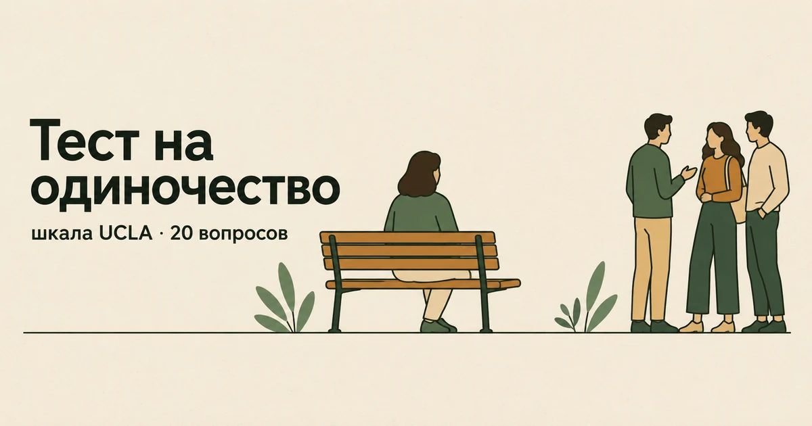

Главная → Тесты → Тест на одиночество
Тест на одиночество (шкала UCLA)
Обновлено: 11.09.2026 · 4 минуты на прохождение
Это тест на одиночество по шкале UCLA — самому используемому в мире инструменту измерения этого чувства. Двадцать утверждений о том, насколько вы связаны с окружающими: не о том, сколько людей вокруг, а о том, чувствуете ли вы себя понятым и близким кому-то. Результат — от 20 до 80 баллов. Бесплатно, без регистрации, ответы остаются в вашем браузере.

Что с этим делать дальше. Балл — не диагноз, а точка отсчёта: смысл он приобретает в динамике, когда видно, растёт он или падает. В приложении AI Therapist есть дневник состояния, упражнения на основе приёмов КПТ и разговор с ИИ-психологом — можно пройти шкалу повторно через пару недель и сравнить.
Что показывает шкала UCLA
Шкалу разработали в Калифорнийском университете в Лос-Анджелесе, отсюда и название; третья версия, которую вы проходите, опубликована Дэниелом Расселлом в 1996 году и с тех пор используется в исследованиях чаще любой другой.
Главная её особенность: в двадцати вопросах ни разу не встречается слово «одинокий». Это сделано намеренно. Признаться в одиночестве тяжело — оно воспринимается как приговор себе, как признак, что с человеком что-то не так. Поэтому на прямой вопрос «вы одиноки?» люди отвечают неохотно и неточно. Шкала спрашивает о другом: есть ли те, к кому можно обратиться, чувствуете ли вы себя на одной волне с окружающими, понимает ли вас кто-нибудь по-настоящему.
Девять утверждений сформулированы «наоборот» — согласие с ними означает не больше одиночества, а меньше. Так проверяют, читает ли человек вопросы или машинально отмечает одну колонку; подсчёт учитывает это автоматически.
Расшифровка результата
Минимально возможный результат — 20 баллов, а не ноль: каждый пункт стоит от одного до четырёх. Официальных клинических границ у шкалы нет, и это стоит знать до того, как смотреть на цифру. Диапазоны ниже — общепринятые на практике ориентиры, а не норматив автора.
| Баллы | Уровень | Что это обычно значит |
|---|---|---|
| 20–34 | Низкий | Связи с людьми ощущаются достаточными; одиночество если и приходит, то эпизодами |
| 35–49 | Умеренный | Обычный уровень для взрослого человека: чего-то не хватает, но опора есть |
| 50–64 | Повышенный | Ощущение непонятости и отдельности стало фоновым |
| 65–80 | Высокий | Выраженное одиночество, которым стоит заняться целенаправленно |
Одна оговорка, без которой цифра вводит в заблуждение: шкала измеряет переживание, а не факты жизни. Человек с большой семьёй и плотным графиком встреч может набрать высокий балл, а живущий один — низкий. Это не ошибка измерения, а суть явления.
Одиночество и уединение — разные вещи
Их постоянно путают, и из-за этого одиночество пытаются лечить тем, что не помогает.
Уединение — это когда вы одни и вам так хорошо. Его выбирают, оно восстанавливает, к нему тянет после переполненного дня.
Одиночество — это разрыв между тем, каких отношений хочется, и тем, какие есть. Его не выбирают, и от количества людей вокруг оно зависит слабо: его можно чувствовать в браке, в большом коллективе и посреди вечеринки.
Отсюда практический вывод. Совет «чаще выходи к людям» работает только тогда, когда дело в изоляции. Если контактов много, а ощущение отдельности остаётся, добавлять встречи бесполезно: не хватает не количества, а глубины — людей, перед которыми можно быть собой. Что с этим делать по шагам, разобрано в статье «Как справиться с одиночеством».
Почему одиночество не стоит просто перетерпеть
По данным Всемирной организации здравоохранения, одиночество испытывает примерно каждый шестой человек в мире, и оно связано с повышенным риском для здоровья — сердечно-сосудистых заболеваний, депрессии, тревожных расстройств. ВОЗ рассматривает его не как частную неприятность, а как вопрос общественного здоровья.
У него есть и психологический механизм. Длительное одиночество меняет то, как человек смотрит на других: он начинает раньше замечать отвержение, толковать нейтральное как холодность и отстраняться первым, чтобы не отвергли его. Получается круг, в котором защита от боли эту боль усиливает. Знать о нём полезно: именно поэтому при высоком балле помогает не «заставить себя общаться», а маленькие шаги и внимание к тому, как вы объясняете себе чужое поведение.
Что делать с результатом
Низкий и умеренный уровень (20–49)
Специально заниматься одиночеством не нужно. Имеет смысл другое — беречь то, что есть: регулярность встреч важнее их количества, а один честный разговор делает больше, чем десяток поверхностных.
Повышенный уровень (50–64)
На этом уровне обычно уже есть избегание: отказы от приглашений, непрочитанные сообщения, отложенные звонки. Работает не героический рывок, а регулярность и мелкий масштаб: одно повторяющееся занятие с одними и теми же людьми даёт больше, чем десять разных знакомств. И стоит проверить, не путается ли одиночество с чем-то другим: похожее ощущение даёт социальная тревожность, когда общения хочется, но оно пугает.
Высокий уровень (65–80)
Такой балл стоит воспринимать всерьёз, особенно если он держится месяцами. Здесь часто переплетаются одиночество и сниженное настроение: депрессия отнимает силы на контакт, а отсутствие контакта углубляет депрессию. Разделить их самостоятельно трудно, и это разумный повод обратиться к специалисту. Проверить вторую половину можно тестом на депрессию PHQ-9, а с чего выбираться — в отдельной статье.
Насколько тесту можно доверять
UCLA — шкала с очень хорошими психометрическими показателями: в работе Расселла внутренняя согласованность составила от 0,89 до 0,94, а повторное прохождение через год давало устойчивый результат. Для самоопросника это много.
Её ограничения тоже стоит знать. Шкала даёт одну общую цифру и не различает, какого именно общения не хватает — близкого человека рядом или круга своих. Она не видит причин: за одним и тем же баллом может стоять переезд, расставание, выгорание, депрессия или социальная тревожность. И она не ставит диагноза: одиночество — не психическое расстройство, а переживание, поэтому высокий балл означает не болезнь, а то, что этой частью жизни стоит заняться.
Когда стоит обратиться к специалисту
- ощущение одиночества держится месяцами и почти не зависит от того, что происходит вокруг;
- к нему добавились подавленность, потеря интереса и усталость, которые держатся больше двух недель;
- вы стали избегать людей, хотя раньше общались, и избегание нарастает;
- появились мысли, что вы никому не нужны и без вас было бы лучше;
- вы снимаете это состояние алкоголем или бесконечной лентой в телефоне;
- одиночество началось после утраты, расставания или переезда и не ослабевает со временем.
Одиночество тем и коварно, что о нём тяжело заговорить первым: кажется, что жалуешься. Здесь можно просто рассказать, как есть, — анонимно, без регистрации и в любое время суток.
Частые вопросы
Сколько баллов по шкале UCLA считается нормой?
Шкала считается от 20 до 80 баллов. Результат 20–34 обычно относят к низкому уровню одиночества, 35–49 — к умеренному, 50–64 — к повышенному, 65–80 — к высокому. Официальных клинических границ у шкалы нет: это общепринятые на практике ориентиры, а не норматив автора, поэтому читать результат стоит как повод задуматься, а не как диагноз.
Чем одиночество отличается от уединения?
Уединение — это когда вы одни и вам так хорошо: его выбирают, и оно восстанавливает силы. Одиночество — это разрыв между тем, каких отношений хочется, и тем, какие есть, и его не выбирают. Поэтому и помогает при них разное: уединение не требует вмешательства, а при одиночестве работают не новые знакомства сами по себе, а отношения, в которых можно быть собой.
Можно ли чувствовать одиночество, когда вокруг люди?
Да, и это обычная ситуация. Шкала UCLA измеряет переживание, а не количество контактов: человек с семьёй и плотным графиком встреч может набрать высокий балл, а живущий один — низкий. Одиночество в окружении людей означает, что не хватает не количества общения, а глубины — тех, перед кем можно не притворяться.
Тест на одиночество анонимный и бесплатный?
Да. Регистрация не нужна, тест бесплатный, подсчёт идёт прямо в браузере, а ответы никуда не отправляются — мы их не получаем и не храним. Результат виден только вам и исчезает после закрытия страницы.
Материал подготовлен командой AI Therapist. Мы приводим шкалу одиночества UCLA (версия 3) в оригинальном виде: все двадцать пунктов, четыре варианта ответа и обратный подсчёт девяти утверждений — так, как их описал автор шкалы. Официальных клинических порогов у неё нет, поэтому мы используем общепринятые на практике ориентиры и говорим об этом прямо. Страница носит просветительский характер, не ставит диагноз и не заменяет консультацию специалиста.
Источники: Russell D. W. «UCLA Loneliness Scale (Version 3): Reliability, validity, and factor structure», Journal of Personality Assessment, 1996, ВОЗ — социальная изоляция и одиночество, NHS — Loneliness.
Кто отвечает за содержание сайта и по каким правилам мы готовим материалы — на странице о проекте.